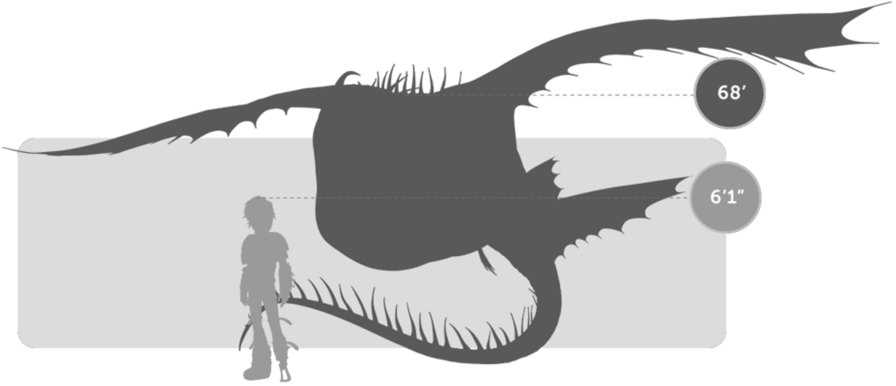
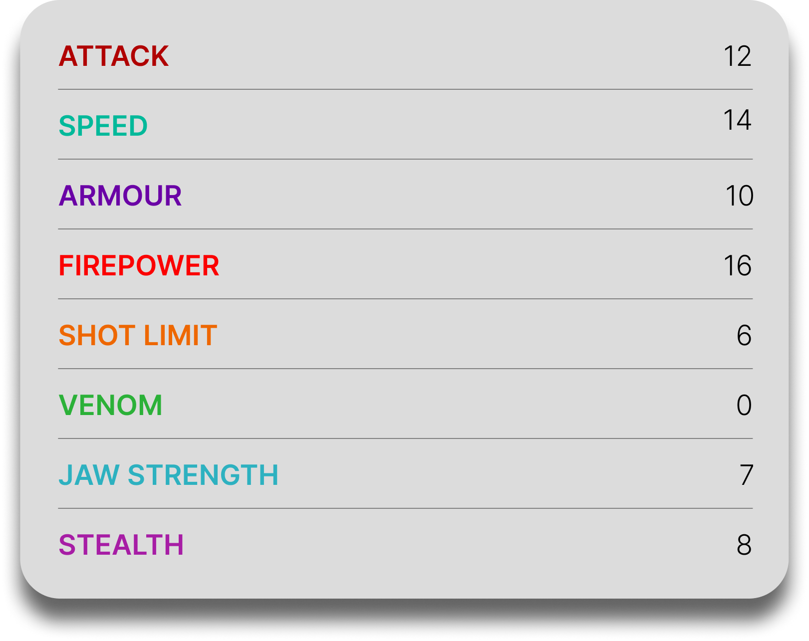

Thunderdrum
General Overview
The Thunderdrum is a large dragon belonging to the Tidal Class. Known for its enormous mouth and devastating sonic attack, it is one of the most powerful amphibious dragons in existence. Although it can also produce fire, the Thunderdrum is most feared for the concussive sound blast it unleashes when threatened, a force so powerful that it can stun dragons, deafen humans, and even kill at close range.


Physical Appearance
- Body & Color: It has a large marine-like body that resembles a mix of a whale shark, manta ray, and baleen whale, often shown in blue, turquoise, or sea-toned colors.
- Head & Face: Its most distinctive feature is its huge expandable mouth, supported by a nasal horn and a broad snout built for projecting sonic force.
- Appendages: It has very short, thin legs that make it awkward on land but still capable of moving surprisingly fast.
- Wings & Tail: It has two pairs of wings, one primary and one smaller rear set, along with a long tail lined with sharp spikes that aid balance and defense.
Abilities and Combat
- Sonic Blast: Its signature attack is a powerful concussive sound wave capable of stunning dragons, deafening humans, and killing at close range.
- Fire Blast: It can also produce waves of blue fire, though this takes much more energy and is not its preferred form of attack.
- Sound Neutralization: It can regulate soundwave frequencies to offset and cancel out the sonic blasts of other Thunderdrums.
- Immense Strength: It is strong enough to carry large riders, pull heavy loads, and overpower other dragons in direct combat.
- Aquatic Adaptation: It can expel air from its lungs to flatten its body, allowing it to skim across the water's surface or dive deep to hunt.
- High Altitude and Endurance: Despite being a Tidal Class dragon, it can survive underwater for long periods and also fly at extremely high altitudes.
Behavior and Personality
- Intelligence: It is highly intelligent, capable of understanding hand signals, learning commands, and coordinating complex attacks.
- Temperament: Thunderdrums are loud, assertive, stubborn, and strong-willed, often making their feelings known immediately.
- Behavior: When alone, they are usually reclusive, preferring sea caves, dark tide pools, and open waters.
- Social Traits: They form pods during hunts or migration, much like cetaceans, and can work together very effectively.
- Diet: Their known diet includes fish and crab.